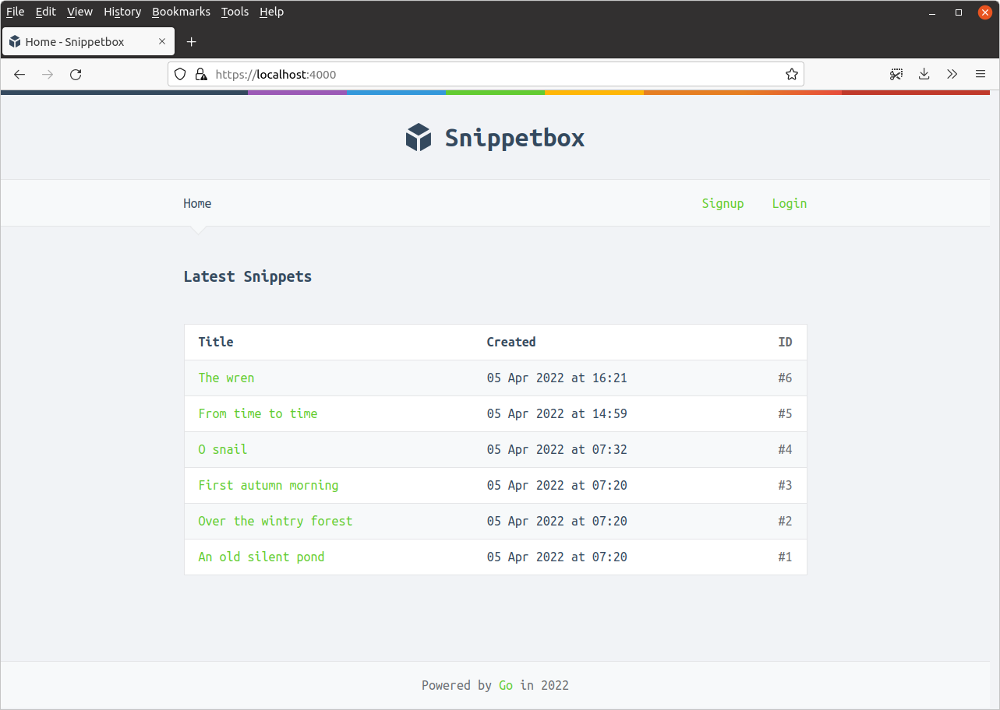
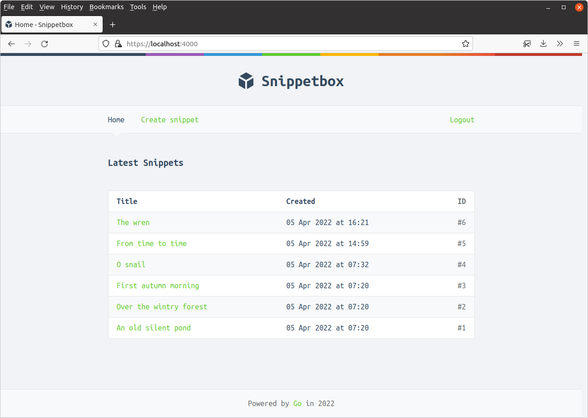

مجوزدهی کاربر
توانایی احراز هویت کاربران برنامه ما خوب است، اما اکنون باید کاری مفید با آن اطلاعات انجام دهیم. در این فصل برخی بررسیهای مجوزدهی را معرفی میکنیم تا:
- فقط کاربران احراز هویت شده (یعنی لاگین شده) بتوانند یک اسنیپت جدید ایجاد کنند؛ و
- محتوای نوار ناوبری بسته به اینکه کاربر احراز هویت شده (لاگین شده) است یا نه تغییر کند. به طور خاص:
- کاربران احراز هویت شده باید لینکهایی به ‘خانه (Home)’، ‘ایجاد اسنیپت (Create snippet)’ و ‘خروج (Logout)’ ببینند.
- کاربران احراز هویت نشده باید لینکهایی به ‘خانه (Home)’، ‘ثبتنام (Signup)’ و ‘ورود (Login)’ ببینند.
همانطور که در فصل قبل به طور خلاصه ذکر کردم، میتوانیم بررسی کنیم که آیا یک درخواست توسط یک کاربر احراز هویت شده انجام میشود یا نه با بررسی وجود یک مقدار "authenticatedUserID" در دادههای نشست آنها.
پس بیایید با آن شروع کنیم. فایل cmd/web/helpers.go را باز کنید و یک تابع helper isAuthenticated() اضافه کنید تا وضعیت احراز هویت را برگرداند، به این صورت:
package main ... // Return true if the current request is from an authenticated user, otherwise // return false. func (app *application) isAuthenticated(r *http.Request) bool { return app.sessionManager.Exists(r.Context(), "authenticatedUserID") }
عالی است. اکنون میتوانیم بررسی کنیم که آیا درخواست از یک کاربر احراز هویت شده (لاگین شده) میآید یا نه با فراخوانی ساده این helper isAuthenticated().
مرحله بعدی پیدا کردن راهی برای انتقال این اطلاعات به templateهای HTML ما است، تا بتوانیم محتوای نوار ناوبری را به درستی تغییر دهیم.
دو بخش برای این وجود دارد. ابتدا، باید یک فیلد جدید IsAuthenticated به struct templateData خود اضافه کنیم:
package main import ( "html/template" "path/filepath" "time" "snippetbox.alexedwards.net/internal/models" ) type templateData struct { CurrentYear int Snippet models.Snippet Snippets []models.Snippet Form any Flash string IsAuthenticated bool // Add an IsAuthenticated field to the templateData struct. } ...
و مرحله دوم بهروزرسانی helper newTemplateData() خود است تا این اطلاعات به طور خودکار هر بار که یک template را رندر میکنیم به struct templateData اضافه شود. به این صورت:
package main ... func (app *application) newTemplateData(r *http.Request) templateData { return templateData{ CurrentYear: time.Now().Year(), Flash: app.sessionManager.PopString(r.Context(), "flash"), // Add the authentication status to the template data. IsAuthenticated: app.isAuthenticated(r), } } ...
پس از انجام این کار، میتوانیم فایل ui/html/partials/nav.tmpl را بهروزرسانی کنیم تا لینکهای ناوبری را با استفاده از اکشن {{if .IsAuthenticated}} تغییر دهیم، به این صورت:
{{define "nav"}}
<nav>
<div>
<a href='/'>Home</a>
<!-- Toggle the link based on authentication status -->
{{if .IsAuthenticated}}
<a href='/snippet/create'>Create snippet</a>
{{end}}
</div>
<div>
<!-- Toggle the links based on authentication status -->
{{if .IsAuthenticated}}
<form action='/user/logout' method='POST'>
<button>Logout</button>
</form>
{{else}}
<a href='/user/signup'>Signup</a>
<a href='/user/login'>Login</a>
{{end}}
</div>
</nav>
{{end}}
همه فایلها را ذخیره کنید و اکنون سعی کنید برنامه را اجرا کنید. اگر در حال حاضر لاگین نیستید، صفحه اصلی برنامه شما باید به این صورت باشد:

در غیر این صورت — اگر لاگین هستید — صفحه اصلی شما باید به این صورت باشد:

احساس آزادی کنید که با این بازی کنید، و سعی کنید لاگین و خروج کنید تا مطمئن شوید که نوار ناوبری همانطور که انتظار دارید تغییر میکند.
محدود کردن دسترسی
همانطور که هست، ما لینک ناوبری ‘ایجاد اسنیپت’ را برای هر کاربری که لاگین نیست پنهان میکنیم. اما یک کاربر احراز هویت نشده هنوز میتواند با مراجعه مستقیم به صفحه https://localhost:4000/snippet/create یک اسنیپت جدید ایجاد کند.
بیایید این را اصلاح کنیم، تا اگر یک کاربر احراز هویت نشده سعی کند به هر مسیری با مسیر URL /snippet/create مراجعه کند، به جای آن به /user/login هدایت شود.
سادهترین راه برای انجام این کار از طریق برخی middleware است. فایل cmd/web/middleware.go را باز کنید و یک تابع middleware جدید requireAuthentication() ایجاد کنید، با دنبال کردن همان الگویی که قبلاً در کتاب استفاده کردیم:
package main ... func (app *application) requireAuthentication(next http.Handler) http.Handler { return http.HandlerFunc(func(w http.ResponseWriter, r *http.Request) { // If the user is not authenticated, redirect them to the login page and // return from the middleware chain so that no subsequent handlers in // the chain are executed. if !app.isAuthenticated(r) { http.Redirect(w, r, "/user/login", http.StatusSeeOther) return } // Otherwise set the "Cache-Control: no-store" header so that pages // require authentication are not stored in the users browser cache (or // other intermediary cache). w.Header().Add("Cache-Control", "no-store") // And call the next handler in the chain. next.ServeHTTP(w, r) }) }
اکنون میتوانیم این middleware را به فایل cmd/web/routes.go خود اضافه کنیم تا مسیرهای خاص را محافظت کنیم.
در مورد ما میخواهیم مسیرهای GET /snippet/create و POST /snippet/create را محافظت کنیم. و منطقی نیست کاربری را خارج کنیم اگر وارد نشده است، پس منطقی است که از آن در مسیر POST /user/logout نیز استفاده کنیم.
برای کمک به این، بیایید مسیرهای برنامه خود را به دو ‘گروه’ مرتب کنیم.
گروه اول شامل مسیرهای ‘محافظت نشده’ ما خواهد بود و از زنجیره middleware موجود dynamic استفاده میکند. گروه دوم شامل مسیرهای ‘محافظت شده’ ما خواهد بود و از یک زنجیره middleware جدید protected استفاده میکند — متشکل از زنجیره middleware dynamic به علاوه middleware جدید requireAuthentication() ما.
به این صورت:
package main ... func (app *application) routes() http.Handler { mux := http.NewServeMux() fileServer := http.FileServer(http.Dir("./ui/static/")) mux.Handle("GET /static/", http.StripPrefix("/static", fileServer)) // Unprotected application routes using the "dynamic" middleware chain. dynamic := alice.New(app.sessionManager.LoadAndSave) mux.Handle("GET /{$}", dynamic.ThenFunc(app.home)) mux.Handle("GET /snippet/view/{id}", dynamic.ThenFunc(app.snippetView)) mux.Handle("GET /user/signup", dynamic.ThenFunc(app.userSignup)) mux.Handle("POST /user/signup", dynamic.ThenFunc(app.userSignupPost)) mux.Handle("GET /user/login", dynamic.ThenFunc(app.userLogin)) mux.Handle("POST /user/login", dynamic.ThenFunc(app.userLoginPost)) // Protected (authenticated-only) application routes, using a new "protected" // middleware chain which includes the requireAuthentication middleware. protected := dynamic.Append(app.requireAuthentication) mux.Handle("GET /snippet/create", protected.ThenFunc(app.snippetCreate)) mux.Handle("POST /snippet/create", protected.ThenFunc(app.snippetCreatePost)) mux.Handle("POST /user/logout", protected.ThenFunc(app.userLogoutPost)) standard := alice.New(app.recoverPanic, app.logRequest, commonHeaders) return standard.Then(mux) }
فایلها را ذخیره کنید، برنامه را مجدداً راهاندازی کنید و مطمئن شوید که خروج هستید.
سپس سعی کنید مستقیماً در مرورگر خود به https://localhost:4000/snippet/create مراجعه کنید. باید متوجه شوید که فوراً به فرم لاگین هدایت میشوید.
اگر میخواهید، میتوانید با curl نیز تأیید کنید که کاربران احراز هویت نشده برای مسیر POST /snippet/create نیز هدایت میشوند:
$ curl -ki -d "" https://localhost:4000/snippet/create HTTP/2 303 content-security-policy: default-src 'self'; style-src 'self' fonts.googleapis.com; font-src fonts.gstatic.com location: /user/login referrer-policy: origin-when-cross-origin server: Go vary: Cookie x-content-type-options: nosniff x-frame-options: deny x-xss-protection: 0 content-length: 0 date: Wed, 18 Mar 2024 11:29:23 GMT
اطلاعات اضافی
بدون استفاده از alice
اگر از بسته justinas/alice برای مدیریت middleware خود استفاده نمیکنید، مشکلی نیست — میتوانید handlerهای خود را به صورت دستی به این صورت wrap کنید:
mux.Handle("POST /snippet/create", app.sessionManager.LoadAndSave(app.requireAuthentication(http.HandlerFunc(app.snippetCreate))))